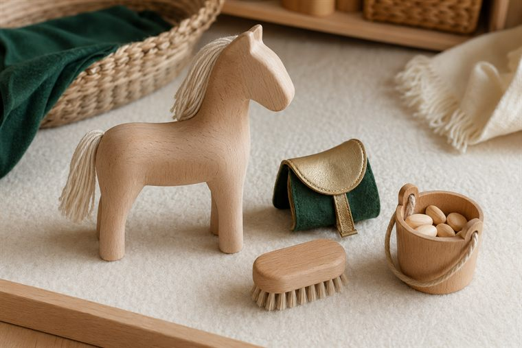
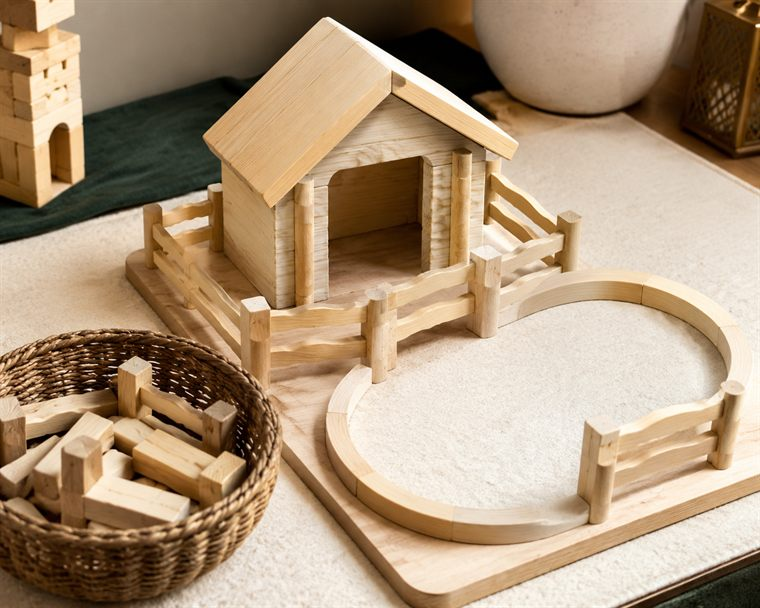
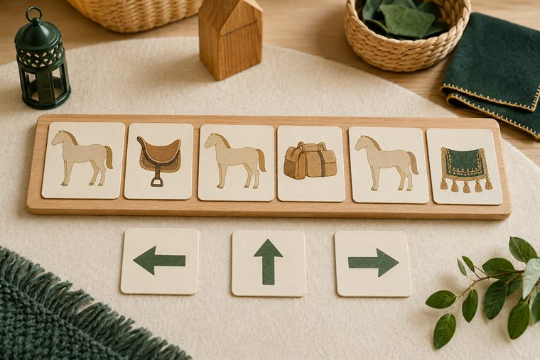
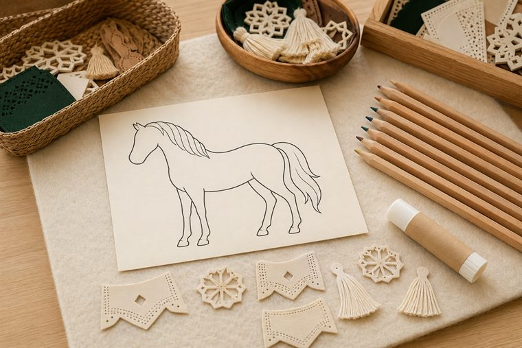

مساحاتُ لعبٍ حرّ بأدواتٍ تعليمية. لكثرة الأعداد نفتح ٤ أركانٍ متوازية بمراكز مختلفة؛ وزّعي المجموعات عليها وتتناوب بينها في الفترتين حتى لا تتكدّس. كل ركنٍ لمسةٌ تطبيقية خفيفة على فكرة اليوم. (أعمار ٥–٦: بناء/تلوين جاهز/قصّ ولصق/ترتيب/اختيار بطاقات/أدوار/حركة — بلا كتابة أو رسمٍ حرّ.)
دروس اليوم المتكاملة: علّمني ربي (التفكّر في الخيل) · لساني (الاتجاهات الستّ).

🏠 الإيهام والأدوار · «أعتني بالخيل وأركب»
لعبُ أدوار: يعتني الطفل بحصانٍ خشبيٍّ بلا ملامح (إطعامٌ · تنظيفٌ · سقيٌ) ثم «يركبُ» لعبًا، شاكرًا تسخيرَ الله له. (لعبُ أدوارٍ بلا كتابة.)
🧰 الأدوات: حصانٌ خشبيٌّ بلا ملامح · أدواتُ عنايةٍ لعبية (فرشاةٌ · دلوٌ · علفٌ لعبيّ) · سرجُ لعب.
📋 دور المعلمة: تدير الأدوارَ وتنسب التسخيرَ لله: «مَن سخّر الخيلَ لخدمتنا وركوبنا؟»؛ تحثّ على الرفقِ بالحيوان وشكرِ النعمة.
🌱 المعنى المركزي: سخّر اللهُ الخيلَ لخدمتي؛ فأرفقُ بها وأشكرُ مسخّرها.
📜 قوانين الركن: أبقى في ركني حتى ينتهي الوقت · أحافظ على أدواته · أتشارك وأنتظر دوري · أُعيد الأدوات مرتّبة.

🧱 ساحة البناء · «أبني إسطبلًا ومضمارًا»
يبني الطفل بالمكعبات الخشبية بحرّيةٍ بيتَ الخيل (الإسطبل) ومسارَه (المضمار)، ويتذكّرُ أنّ العنايةَ بالخيل نعمةٌ يرعاها: «اللهُ سخّرها، وأنا أُهيّئ لها المأوى». (لا تلوين هنا — التلوينُ في ركن فنوني.)
🧰 الأدوات: مكعباتٌ خشبية متنوّعة · أسوارُ لعبٍ وقطعُ بناء · قاعدةُ/سجادةُ البناء · مجسّماتُ خيلٍ خشبية بلا ملامح.
📋 دور المعلمة: تُتيح البناءَ الحرَّ ثم تنضمّ بلمسةٍ خفيفة؛ تربطُ البناءَ بالعنايةِ والنعمة: «كيف نُهيّئ للخيلِ مأوًى يليقُ بها؟»؛ تشجّع التعاونَ والرفق.
🌱 المعنى المركزي: أُهيّئ للخيلِ مأوًى؛ نعمةٌ من الله أرعاها وأشكرها.
📜 قوانين الركن: أبقى في ركني حتى ينتهي الوقت · أحافظ على أدواته · أتشارك وأنتظر دوري · أُعيد الأدوات مرتّبة.

🧩 أدرك وأستمتع · «منافعُ الخيل والاتجاهات»
يطابقُ الطفل بطاقةَ الخيلِ ببطاقةِ منفعتها المصوّرة (ركوبٌ · حملٌ · زينة)، ثم يلعبُ لعبةَ الاتجاهات بالحركة (يمين · يسار · أمام) موجّهًا حصانَه اللعبيّ، بلا كتابة.
🧰 الأدوات: بطاقاتُ منافعِ الخيل المصوّرة · بطاقاتُ اتّجاهٍ (يمين/يسار/أمام) · لوحةُ ترتيبٍ مصوّرة · سلالُ تصنيف.
📋 دور المعلمة: تنمذجُ مطابقةً واحدة ثم يستكشفُ الطفل بالحركة؛ تحاورُه: «فيمَ تنفعنا الخيل؟ ومَن جعل فيها هذه المنافع؟»؛ تحتفي بالمحاولةِ لا بالصوابِ فقط.
🌱 المعنى المركزي: في الخيلِ منافعُ سخّرها الله؛ فأعرفُ فضله وأشكره.
📜 قوانين الركن: أبقى في ركني حتى ينتهي الوقت · أحافظ على أدواته · أتشارك وأنتظر دوري · أُعيد الأدوات مرتّبة.

🎨 فنوني الجميلة · «ألوّنُ الخيلَ وأزيّن سرجها»
يلوّنُ الطفل حصانًا جاهزًا (ظلٌّ جانبيٌّ بلا ملامح)، ثم يقصّ ويلصق قصاصاتِ زينةِ السرج حوله، ويردّدُ «اللهُ خلق الخيلَ وأبدع صنعها».
🧰 الأدوات: رسمُ حصانٍ جاهزٌ للتلوين (ظلٌّ بلا ملامح) · أقلامُ تلوين · قصاصاتُ زينةِ سرجٍ مصوّرة · مقصٌّ آمن ولاصق.
📋 دور المعلمة: تُسمّي أجزاءَ الخيلِ وزينتها وتنسبُ الجمالَ إلى الله؛ تعين على القصّ واللصق؛ تُثني على الفرحِ والمشاركةِ لا على الإتقان الفنّي.
🌱 المعنى المركزي: جمالُ الخيلِ وزينتها من صنعِ الله؛ فأفرحُ بخلقه وأحمده.
📜 قوانين الركن: أبقى في ركني حتى ينتهي الوقت · أحافظ على أدواته · أتشارك وأنتظر دوري · أُعيد الأدوات مرتّبة.
تفاصيلُ الأركان الستّة وروتينُها في تبويب «خريطة الأركان» أعلى الصفحة، ولكلِّ لقاءٍ ركنان تطبيقيّان داخل دليله.